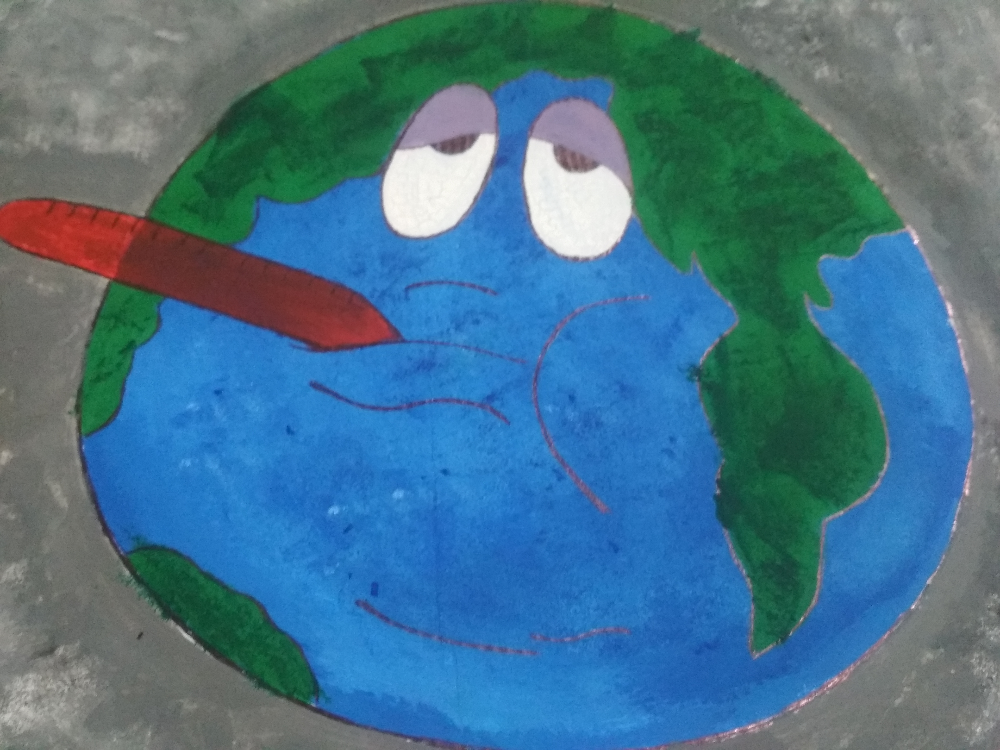

Dionisio Blanco nació en San Cristóbal, República Dominicana, el 9 de octubre 1953 y se graduó en la Escuela Nacional de Bellas Artes de Santo Domingo. Trabajó como profesor de dibujo en el Departamento de Arquitectura de la Universidad Autónoma de Santo Domingo, y como co-director de la distinguida revista, Isla Abierta, donde también es crítico de arte. Él es un pintor establecido cuyas contribuciones e investigaciones se pueden encontrar en muchas bibliotecas nacionales e internacionales. Ha recibido numerosos premios y distinciones importantes en concursos y bi-anuales nacionales patrocinados por organizaciones oficiales, así como las instituciones privadas. Su trabajo ha beendisplayed en numerosas exposiciones individuales y colectivas en Santo Domingo, México, París, Caracas, Sao Pablo, Jerusalén, San Juan, Buenos Aires, Nueva York, Miami, Chicago, Roma, Madrid, Lisboa, Bruselas y Bonn, entre otros las ciudades.
Este dibujo esta creado para el publico infantil para que comprendan como se encuentra el planeta tierra con la contaminacion ambiental que existe actualmente.
